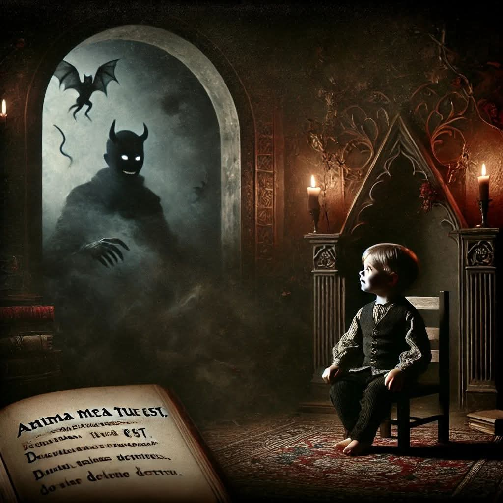

Writing has always been my refuge, where the shadows of thought and the quiet obscurity of existence come alive. In the depths of these...
Anima mea tua est
Once in my youth, a child was I,
Wild in mind and bright of eye.
As the shadows danced on the wall,
I heard the devil's call.
I sat for a chat, just a moment or two,
“Dark one,” I said, “I have a deal for you.
Consider my soul—
Isn’t it valuable?
I’ll trade it for riches, for gold untold,
Free and clear, no title to hold.
Yours alone, and yours alone,
To do with as you will.”
His gaze turned cold, a frost in the air,
And I froze as I felt his unyielding stare.
A chill ran deep, straight down to my bone.
“My child,” he said, “Why bargain for what I already own?”
